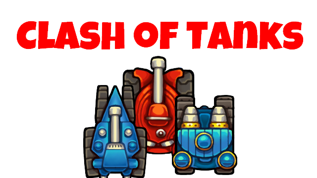
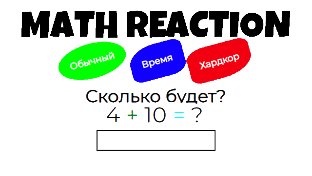
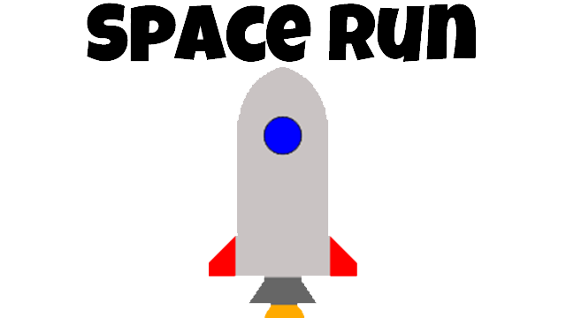
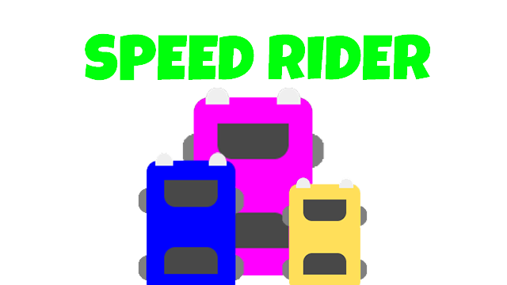

Название |
Описание |
Изображение |
Играть |
|---|---|---|---|
Clash of Tanks |
В ней 12 уровней, игра про танки и сражения. У тебя есть 3 танка, которыми ты должен уничтожить своего соперника (бота). С каждым уровнем игра становиться всё сложнее и сложнее. Советуем сыграть каждому и побывать виртуально на поле сражения. Также есть режим Джаггернаута - это один уровень, но он очень длинный и сложный, ведь у Джаггернаута (твоего главного и единственного врага) 50 000 здоровья. |  | |
Math Reaction |
Это игра про математические уравнения. Они развивают твою логику и математическое мышление. Есть 3 типа игра, это "Обычный" - где у тебя 2 минуты на решения как можно больше примеров и в конце тебе высвечивается оценка по 5-ти бальной системе, "Время" - где ты должен ответить на как можно больше примеров, если отвечаешь правильно - время прибавляется, неправильно - отнимается. Также есть самый сложный режим - "Хардкор" - где у тебя есть только 3 секунды дать ответ на лёгкий, а возможно и сложный пример. Ну же, испытай себя! |  | |
Space Run |
Ты - управляющий ракетой и попал под метеоритный дождь. Как долго он будет длится - неизвестно, как долго ты сможешь выжить в этой игре? Сыграй и узнай, вдруг ты прирождённый водитель ракетного судна? |  | |
SpeedRider |
Это бесконечная гоночная компьютерная игра. Очень простое управление. Можешь сам выбрать машинку. Каждое определённое количество очков игра ускоряется (становиться сложнее). Соревнуйся со своими друзьями на наибольшее набирание очков. |  |